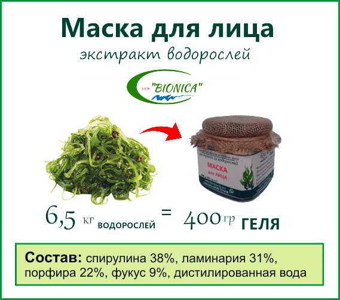

Маски из водорослей от морщин и професиональный уход за кожей лица на каждый день
Кожа лица увядает?
Теряется упругость?
Морщины на лице?
Кожа блекнет?

Разгладились носогубные складки
Тургор кожи востановился
Цвет лица сияющий
Заметный лифтинг лица
Натуральная косметика для кожи тела. Комплекс витаминов. Выводит из организма шлаки и токсины
Обертывание избавит от целлюлита в домашних условиях. Поможет уберать целлюлит на ногах и попе
Реальный лифтинг эффект кожи тела. Оздоровление и омоложение кожи. Эффективный уход за кожей

ЗАКАЖИ Маску для ЛИЦА. Доставка по Бишкеку БЕСПЛАТНО

Супер гель. Я женщина бальзаковского возраста, и достаточно трудно что-то подобрать для лица.
Сделала 2 курса по 12 масок, результаты превзошли все ожидания. Кожа лица мягкая как у ребенка. Морщины разгладились...
Спасибо Вам
Теперь я ваша клиентка... Процветания вам

НАТУРАЛЬНАЯ профессиональная косметика из ВОДОРОСЛЕЙ "BIONICA"
1. На изготовление 400 гр экстракта ушло 6,5 кг водорослей. Водоросли собранны на Курильских островах Россия и переработанны г Томск в Академическом городке
2. Сырье ограниченно, поэтому в розничной продаже экстрактов из водорослей НПК "BIONICA" нет
3. Экстракты распределяются по филиалам - франшизам, которые используют его по своему усмотрению
Сотрудники филиалов - франшиз НПК "BIONICA" обученны и снабжены необходимым оборудованием и сырьем
Доставка по Бишкеку БЕСПЛАТНО

Африка озеро Чад
Идеальный источник белка. Усвоение 99,9%. Питание колагеном. Восстановление кожи, волос

Курильские острова
Активирует подкожный кровоток. Убирает отеки. Снабжает витаминами и минералами

Острова Фиджи
Доставляет в клетку витамины и минералы. Выводит токсины и шлаки

Охотское море
Чистит кровь, плазму крови, сосуды кожи от холестерина. Омолаживает кожу лица
ОМОЛОЖЕНИЕ КОЖИ ЛИЦА достигается за счет усиления подкожного кровотока и вымывания токсинов и шлаков
ЛИФТИНГ и улучшение структуры кожи за счет снабжения лучшими витаминами и минералами из водорослей
ЗАКАЖИ Маску для ЛИЦА. Доставка по Бишкеку БЕСПЛАТНО

Выбрала гель - маску "BIONICA" для постоянного ухода за кожей лица. Пользуюсь только натуральной косметикой. Работа в СМИ требует постоянного внимания к своей внешности.
Замечательно питает, увлажняет кожу. Реальный лифтинг. ЭФФЕКТ ОМОЛОЖЕНИЯ ЛИЦА присутствует... Довольна!
Устранение воспалений различных типов
Уничтожение патогенной и гнилостной микрофлоры
Ускорение рубцевание ран и заживление ожогов
ЗАКАЖИ Маску для ЛИЦА. Доставка по Бишкеку БЕСПЛАТНО

У меня ПРОБЛЕМНАЯ КОЖА ЛИЦА. Прыщи... А ведь я студентка престижного ВУЗа... Что только не делала. Ничего не помогало...
Подруга посоветовала эти МАСКИ для ЛИЦА "BIONICA". Брала с сомнением, слишком много было неудачных попыток...
Послушала подругу, взяла и не пожалела. Уже после 11 масок кожа очистилась...
Спасибо!
Доставка по Бишкеку БЕСПЛАТНО

КУПИ 2 БАНКИ за 1200 сом
СЭКОНОМЬ - 400 сом

КОЛИЧЕСТВО МАСОК для ЛИЦА по АКЦИИ ОГРАНИЧЕННО

Сертификат сан-эпидем ЕАС
Годен до 2020 г ЕАС
Сертификат соответствия ЕАС
Действителен в ЕАС до 2020 г

Экстракция водорослей
Авторские разработки

Полисахариды из бурых водорослей
Патент на производство
Производство гелей из водорослей
Гели из водорослей

Экстракция альгината кальция
Патент альгинат кальция
Экстракция альгината натрия
Патент альгинат натрия

Пробиотик Ветом
Лучшие пробиотики ЕАС

Экология
Самое чистое место на Земле. Чистейшие водоросли

Дефицит водорослей
Сбор идет вручную на мелководье. Количество ламинарии ограниченно. Сырье распределено на годы вперед

Натуральность
28 натуральных витаминов и минералов

Водоросли
Уникальное сырье ламинария с Курильских островов
Отдел качества
Перед эктракцией ламинарии еще раз убрать лишнее
Экстракция
Единственное в мире оборудования экстракции водорослей без химии
Готовый экстракт водорослей
На получение 20 гр порошка экстракта ушло 6,5 кг водорослей

ЗАКАЖИ Маску для ЛИЦА. Доставка по Бишкеку БЕСПЛАТНО
ПОДЕЛИСЬ С ДРУЗЬЯМИ